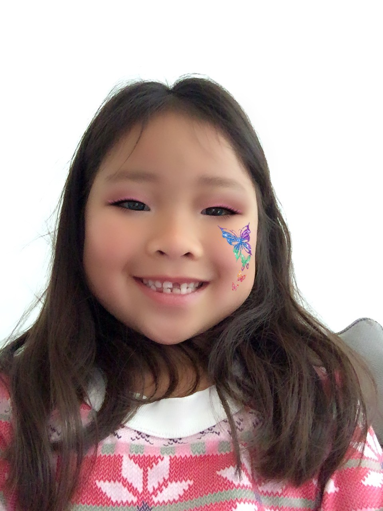
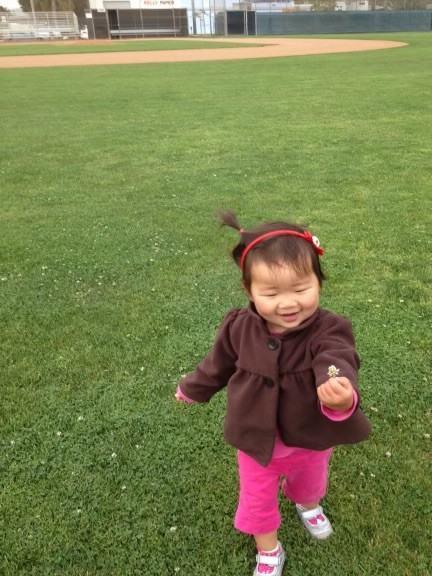
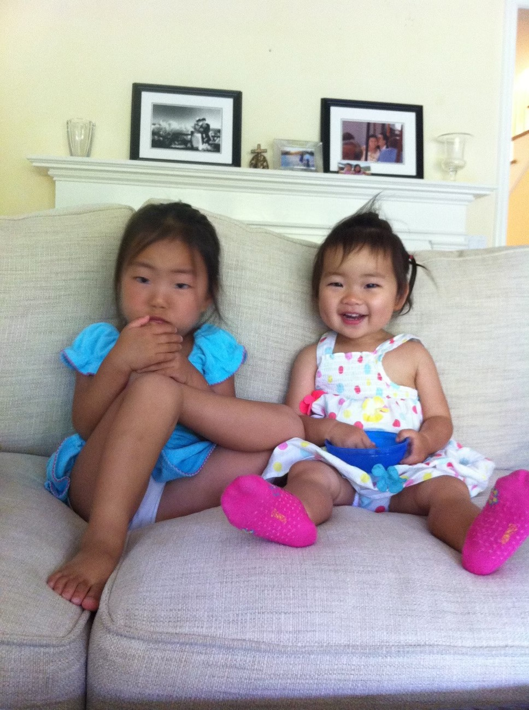

About Me
  Hi, I'm Vivian Lee, a 8th grader from Eastside Preparatory School. I love exploring various things, from sports, dogs, clothing, art, and writing.
I come from a family of five, where creativity and education are highly valued. I have two sisters who both attend Eastside Preparatory School along with me, named Audrey and Claire. Audrey is in 10th grade and Claire is in 7th.
Here are some of my interests. I enjoy writing a lot because I get to use a lot of creative thinking. I also like art and hands-on crafts. I enjoy being active and doing different sports.
EPS (Eastside Preparatory School) provides an environment where I can explore my passions and academic pursuits. The small class sizes allow for personalized learning experiences, which I find enriching.
When I grow up, I aspire to pursue a career that combines my love for writing and my passion for sustainable living. I envision myself contributing to the industry through thoughtful and impactful content.
Thank you for visiting my biography page. I hope you've gained insight into who I am and what drives my passions. Feel free to explore more of my journey through my website!